New figures
Figures made by the scripts in overall/scripts/ from the snapshot in overall/data/.
System colours are fixed: LIVAGE (E⁻/E⁻) LIVAGE (E⁻/E⁰) LIVAGE (E⁰/E⁰) LIVAGG LIVAGH (H⁺) LIVAGK LIVAGQ LIVAGR.
Overview
2 figuresAcross systems
9 figuresHalved structure
8 figuresConvergence QC
3 figuresData tables
7 CSV filesOverview
Every PMF in one figure: the 6×6 residue-pair grid, the three-residue windows and LIVA–LIVA, all eight systems overlaid in their fixed colours.

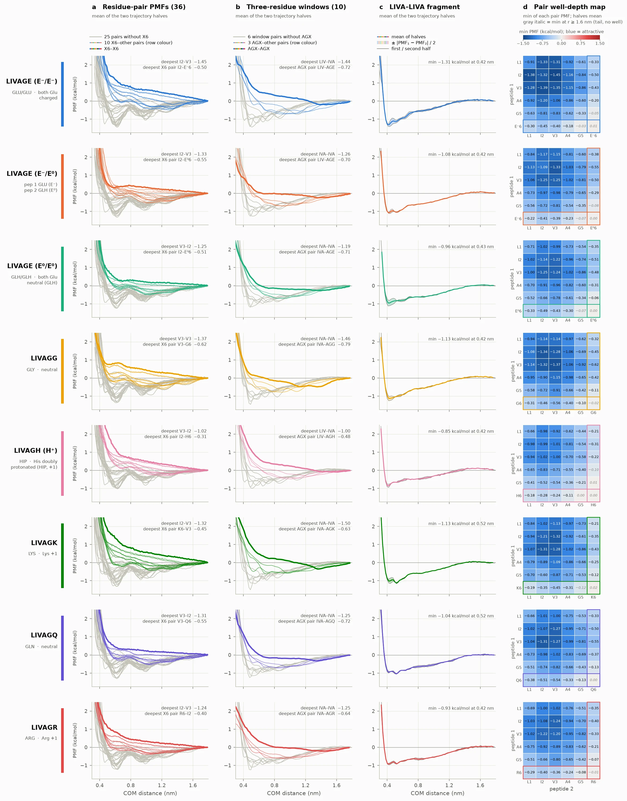
Overview: all PMFs, all systems overlaid (mean of halves)
Every PMF for every system in one figure, one line per system in its fixed colour. (a) the 36 residue-pair PMFs as a 6×6 grid (row = position on peptide 1, column = position on peptide 2, X = residue 6); (b) the 10 three-residue window PMFs as the upper triangle of a 4×4 grid; (c) the LIVA–LIVA fragment PMF, dots mark each system's minimum. Panels that involve residue 6 have a tinted background. All panels share x (0.3–1.8 nm COM distance) and y (−1.75 to 2.5 kcal/mol, repulsive wall clipped). As in pmf_from_cpptraj.py each PMF is −kT ln P(r) of the raw distance histogram zeroed at 1.8 nm, no r² Jacobian. Pair PMFs: mean of the two trajectory halves. Well depths are tabulated in figures/overview/pair_well_depths_mean.csv.


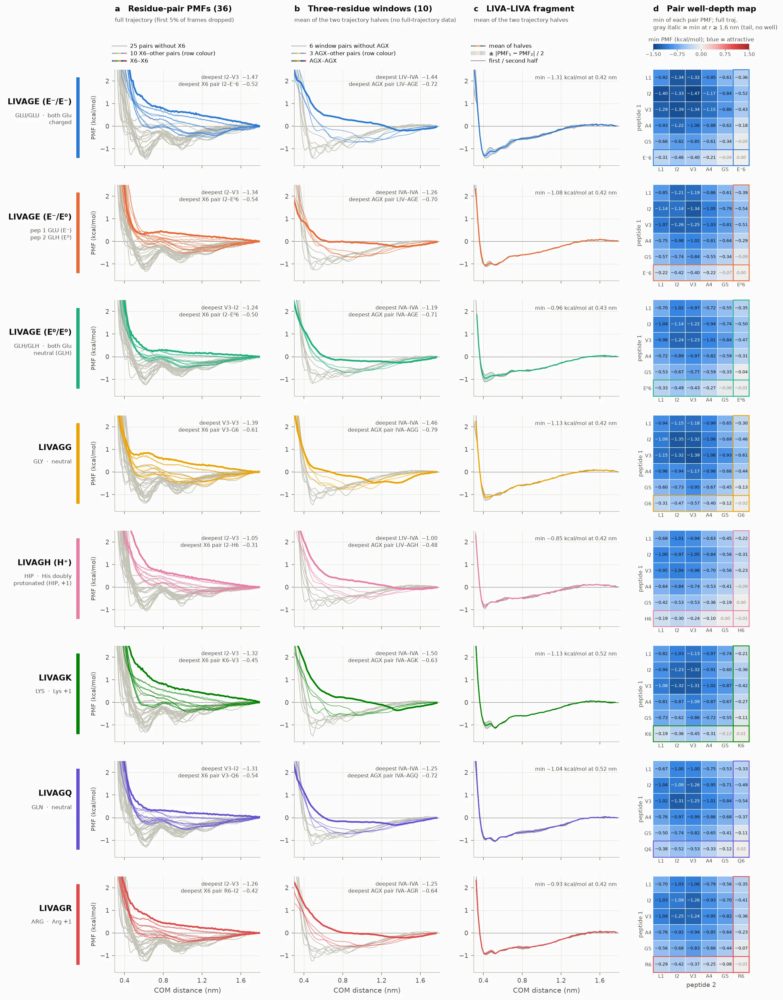
Overview: all PMFs, all systems overlaid (full-trajectory pairs)
Every PMF for every system in one figure, one line per system in its fixed colour. (a) the 36 residue-pair PMFs as a 6×6 grid (row = position on peptide 1, column = position on peptide 2, X = residue 6); (b) the 10 three-residue window PMFs as the upper triangle of a 4×4 grid; (c) the LIVA–LIVA fragment PMF, dots mark each system's minimum. Panels that involve residue 6 have a tinted background. All panels share x (0.3–1.8 nm COM distance) and y (−1.75 to 2.5 kcal/mol, repulsive wall clipped). As in pmf_from_cpptraj.py each PMF is −kT ln P(r) of the raw distance histogram zeroed at 1.8 nm, no r² Jacobian. Pair PMFs: whole trajectory after dropping the first 5% of frames (windows and fragment exist only as halves, so b and c stay mean of halves). Well depths are tabulated in figures/overview/pair_well_depths_full.csv.

Across systems
The same PMF overlaid for all eight systems, well-depth maps and residue-6 (X) focus.

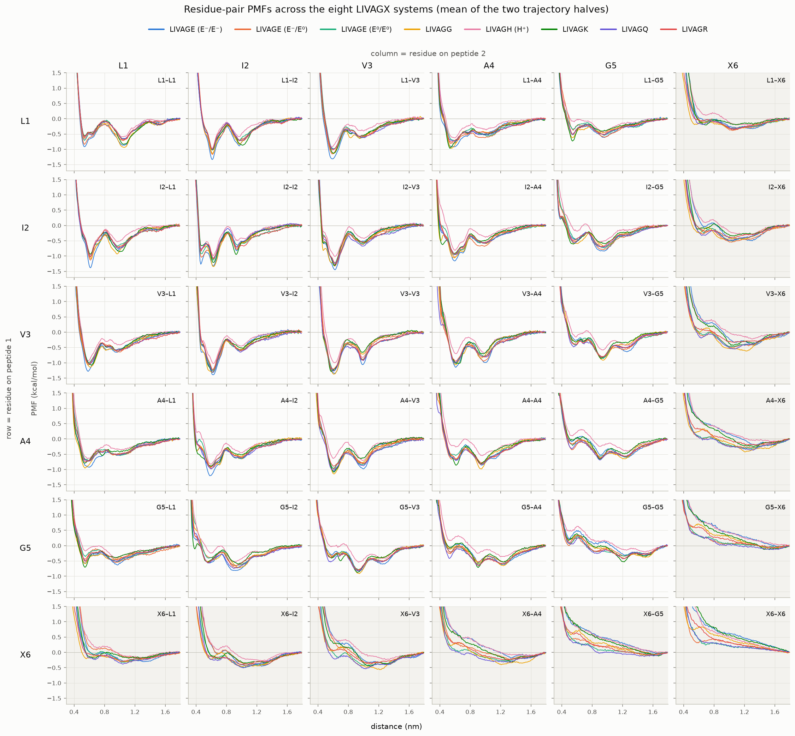
Residue-pair PMFs, all systems (mean of halves)
Each panel overlays the eight systems' PMF of the centre-of-mass distance between residue i of peptide 1 (row) and residue j of peptide 2 (column); X = residue 6 (E, G, H, K, Q or R) and the tinted panels are the 11 pairs that involve it. Curves are the mean of the two 5%-trimmed trajectory halves (single_residue_pmf_mean_value, 0.01 nm bins, zero at 1.8 nm), so a negative dip is an attractive contact well; all panels share axes. The half-to-half error at each minimum is in well_depths_all.csv (bands: livage_protonation.png and each system's own 6x6_mean_uncertainty plot).

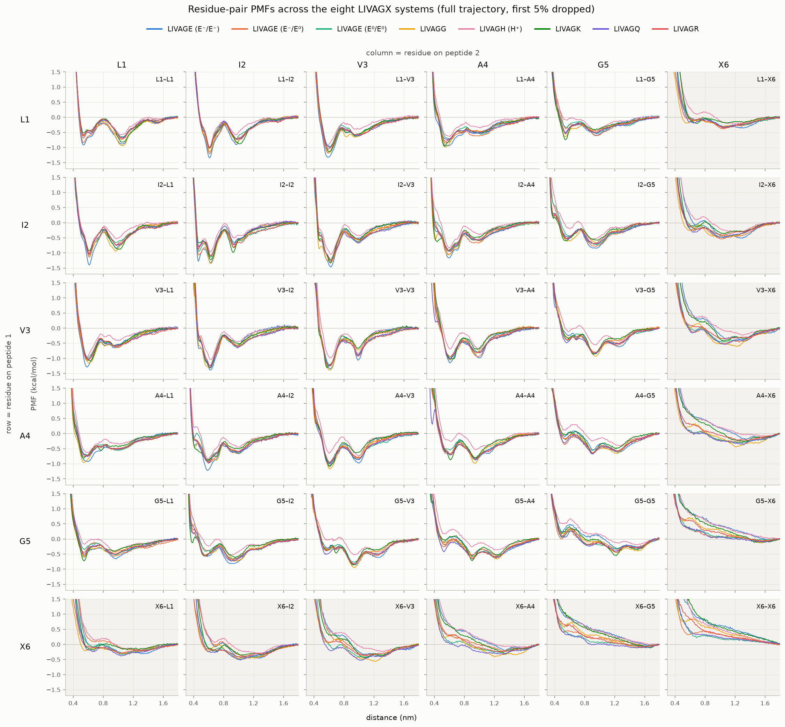
Residue-pair PMFs, all systems (full trajectory)
Same 6x6 layout as the mean-of-halves grid, but each curve is the PMF of the full trajectory with the first 5% of frames dropped as equilibration (single_residue_pmf_full_value, 0.01 nm bins, zero at 1.8 nm, no uncertainty estimate). Rows = residue on peptide 1, columns = residue on peptide 2, X = residue 6, tinted panels involve X; shared axes.

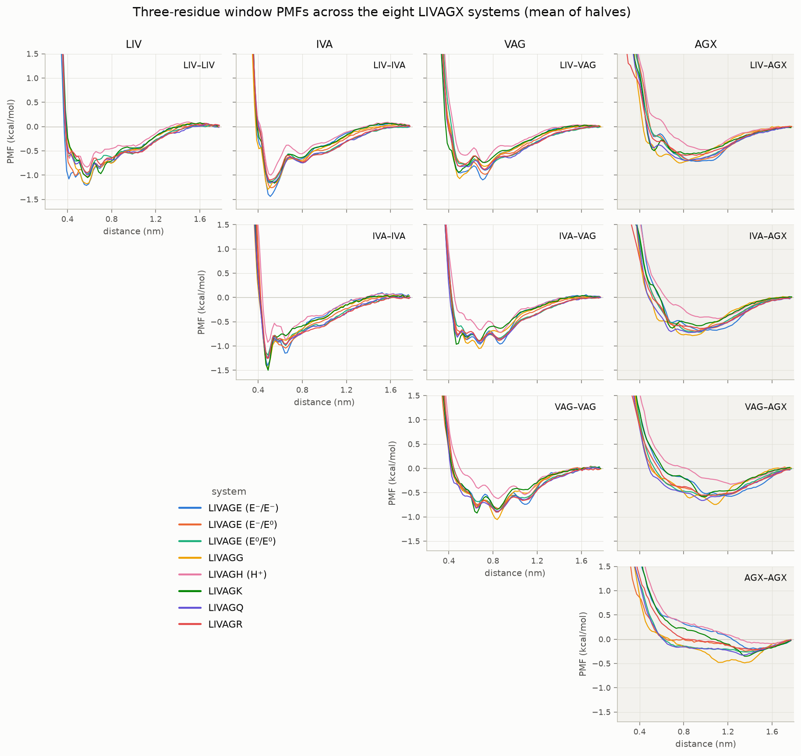
Three-residue window PMFs, all systems
Upper triangle of the 4x4 grid of three-residue window pairs (LIV, IVA, VAG, AGX; X = residue 6); off-diagonal panels pool both orderings (window i on peptide 1 with j on peptide 2 and vice versa), as in pmf_from_cpptraj.py, so LIV–AGX is the same curve as AGX–LIV. Curves are the mean of the two trajectory halves (three_residue_pmf_halves_value, 0.02 nm bins, zero at 1.8 nm); tinted panels contain the AGX window; shared axes.

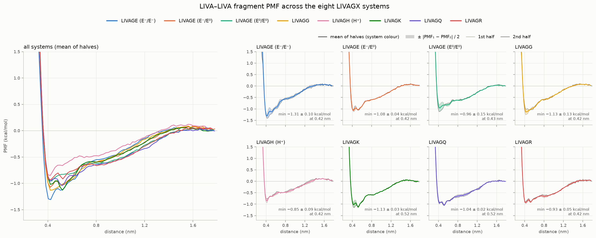
LIVA–LIVA fragment PMF, all systems
PMF of the centre-of-mass distance between the LIVA fragments (positions 1-4 = residues 2-5 and 10-13, so residue 6 itself is not included) of the two peptides: left, the eight systems' mean-of-halves PMFs overlaid; right, one panel per system with the two 5%-trimmed trajectory halves in gray, the mean in the system colour, the ±|PMF₁−PMF₂|/2 band and the well minimum ± its half-to-half error. Data: fragment_pmf_halves_value/LIVA_LIVA_halves.csv (0.02 nm bins, zero at 1.8 nm); shared axes.

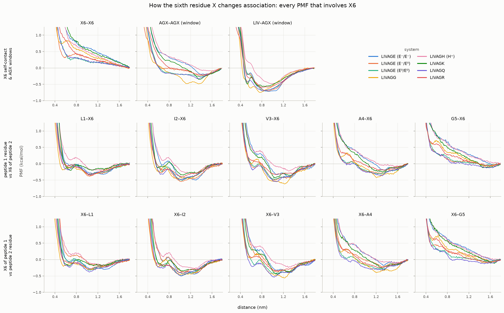
Residue-6 (X) focus: PMFs involving X6
Every PMF that involves the varying residue 6 (X): X6–X6 and the AGX–AGX and LIV–AGX windows (top), the other residue pairs with X on peptide 2 (middle) or on peptide 1 (bottom); one line per system, mean of the two trajectory halves, zero at 1.8 nm, shared y-axis zoomed to −1.0…1.25 kcal/mol because X-involving wells are shallow. More negative = stronger association: X6–X6 has no attractive well in any system (most repulsive for E⁻/E⁻, K and H⁺) and LIVAGH (H⁺) gives the shallowest wells almost everywhere. In LIVAGE (E⁻/E⁰) Glu6 of peptide 1 is charged (GLU) and Glu6 of peptide 2 is neutral (GLH), so L1–X6 and X6–L1 differ by charge there.

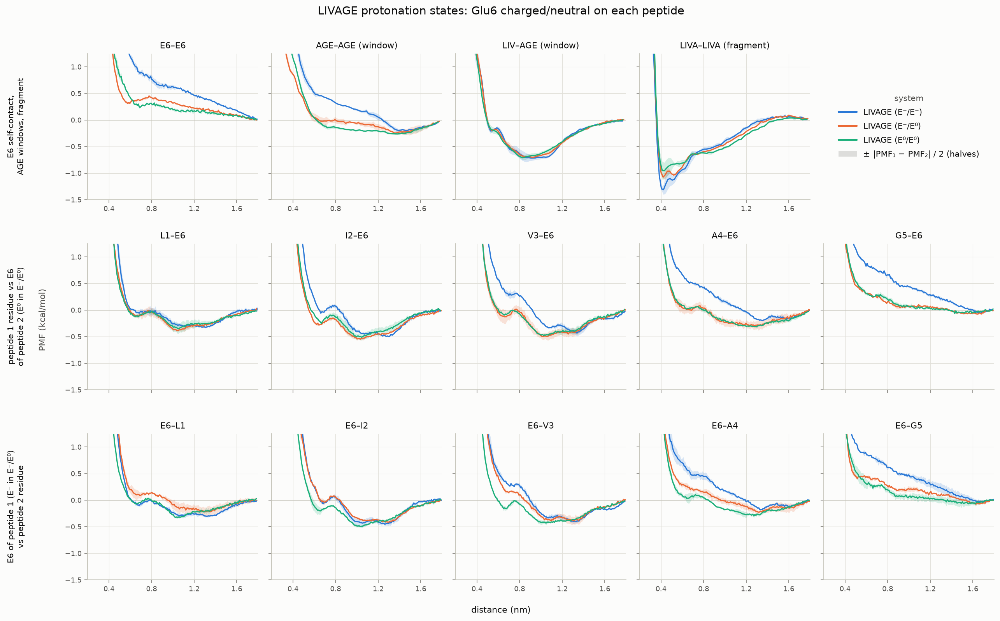
LIVAGE protonation states compared
Only the three LIVAGE charge states: both Glu6 charged (E⁻/E⁻, GLU/GLU), peptide 1 charged and peptide 2 neutral (E⁻/E⁰, GLU/GLH), both neutral (E⁰/E⁰, GLH/GLH). Top: E6–E6, the AGE–AGE and LIV–AGE windows and the LIVA–LIVA fragment; middle/bottom: the other E6-involving pairs with E6 on peptide 2 (neutral in E⁻/E⁰) or on peptide 1 (charged in E⁻/E⁰); the LIV–AGE window pools both orderings, so in E⁻/E⁰ it mixes the charged and the neutral AGE. Lines = mean of the two trajectory halves, bands = ±|PMF₁−PMF₂|/2, zero at 1.8 nm, shared y-axis zoomed to −1.5…1.25 kcal/mol.

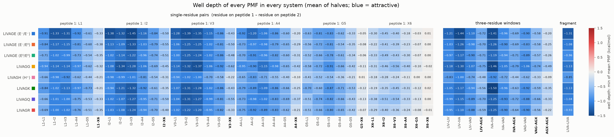
Well depth heatmap (all systems, all PMFs)
Each cell is the minimum of the mean-of-halves PMF (kcal/mol, zero at 1.8 nm) on a diverging scale centred at 0, so darker blue = deeper attractive well. Columns: the 36 residue pairs (residue on peptide 1 – residue on peptide 2), the 10 three-residue window pairs and the LIVA–LIVA fragment; bold labels involve residue 6 (X). Values and the half-to-half error at each minimum are in well_depths_all.csv.

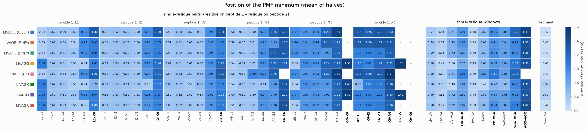
Well position heatmap (all systems, all PMFs)
Each cell is the distance (nm) of the global minimum of the mean-of-halves PMF, i.e. the most favourable contact distance; darker = longer, '–' = no defined well (minimum shallower than −0.1 kcal/mol, or at r ≥ 1.6 nm in the flat tail next to the 1.8 nm zero). Where a PMF has two wells of similar depth the position can jump between them across systems (e.g. L1–L1 at ~0.54 vs ~1.05 nm). Same columns as the well-depth heatmap; data in well_depths_all.csv.

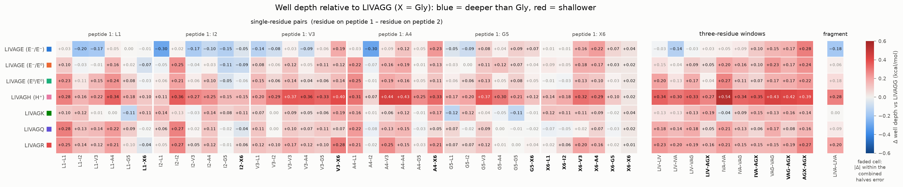
Well depth relative to LIVAGG (X = Gly)
Well depth (minimum of the mean-of-halves PMF) of each system minus that of LIVAGG, whose residue 6 is glycine (no side chain), isolating the effect of the X side chain and its charge: blue = deeper / more attractive than with Gly, red = shallower. Faded cells with gray values are within the combined half-to-half error at the two minima (|Δ| ≤ √(err² + err_G²), err = |PMF₁−PMF₂|/2, roughly one standard error) and should not be over-read. Same columns as the well-depth heatmap; data in well_depths_all.csv.
Halved structure
Structure of LIVA-LIVA contact frames per trajectory half: contacts, H-bonds, angle, end-to-end distance, backbone dihedrals.

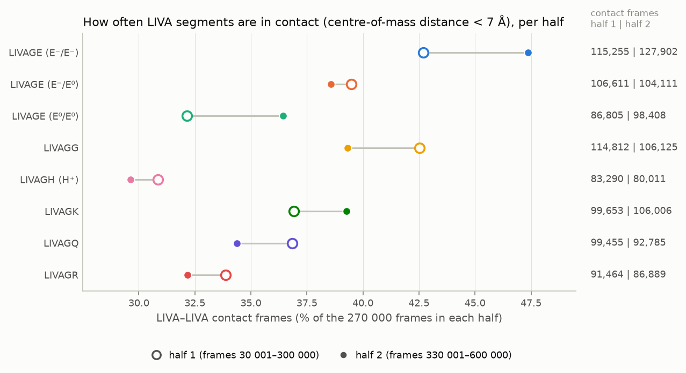
LIVA–LIVA contact frames per trajectory half
Percentage (and number, right column) of the 270 000 frames of each trajectory half in which the centre-of-mass distance between the LIVA segments of the two peptides (cpptraj distance :2-5 vs :10-13, mass-weighted) is below 7 Å; these are the frames used for the angle, H-bond and backbone-dihedral analyses. Open marker = half 1 (frames 30 001–300 000), filled = half 2 (330 001–600 000); a long gray connector means the two halves disagree, i.e. contact formation is not converged.

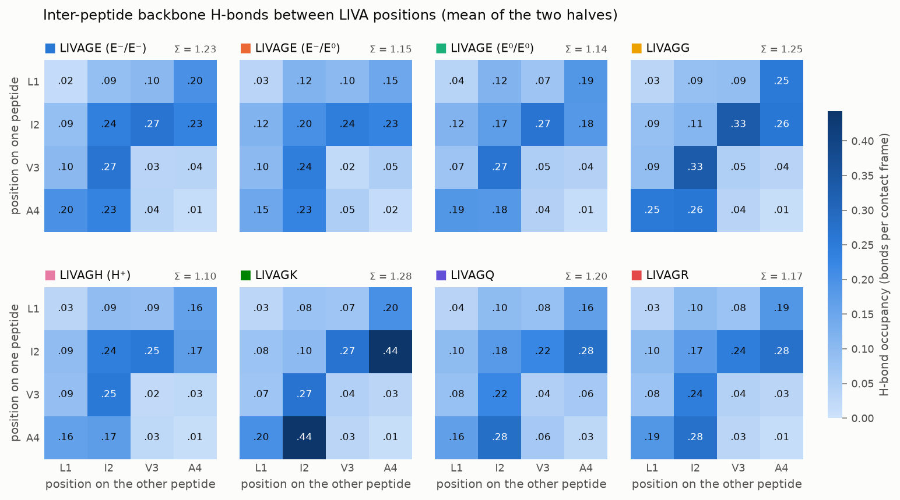
Inter-peptide backbone H-bond occupancy maps (mean of halves)
Each 4×4 map gives, for residue i of one peptide and residue j of the other (LIVA only; the cpptraj hbond mask was :2-5,10-13, nointramol), the summed fraction of contact frames in which an N–H···O=C H-bond links them (cpptraj default criteria: N···O < 3.0 Å, N–H···O angle > 135°), summing both donor/acceptor directions and both peptide assignments, so the map is symmetric and an off-diagonal bond appears in both (i,j) and (j,i). Values are the mean of half 1 and half 2 and are per LIVA–LIVA contact frame (the frames the H-bond analysis ran on); Σ = upper triangle + diagonal = mean number of LIVA–LIVA backbone H-bonds per contact frame. One colour scale for all systems.

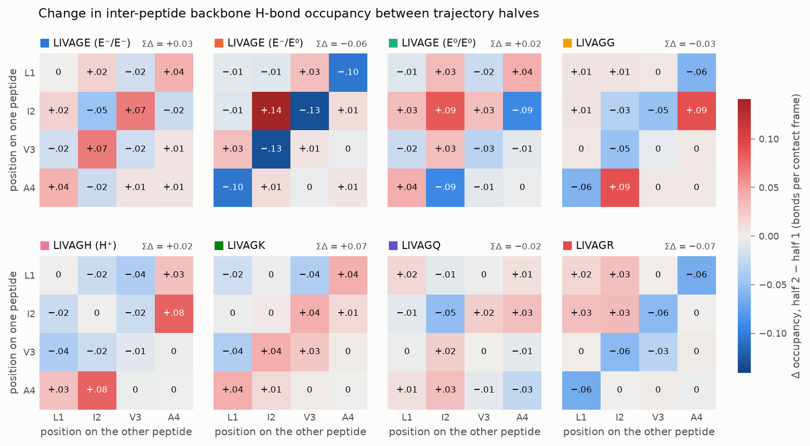
H-bond occupancy: second half minus first half
Same symmetric LIVA×LIVA occupancy matrices as the H-bond maps, shown as half 2 (frames 330 001–600 000) minus half 1 (frames 30 001–300 000), per contact frame. Red = more frequent in the second half, blue = less frequent, gray ≈ converged; ΣΔ is the change in the mean number of LIVA–LIVA backbone H-bonds per contact frame. One symmetric colour scale for all systems.

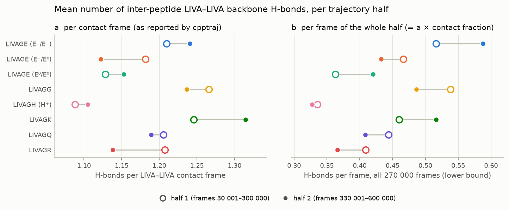
Total inter-peptide backbone H-bonds per half
Sum of the cpptraj Frac column over all inter-peptide LIVA–LIVA backbone H-bonds = mean number of such H-bonds per frame. (a) per LIVA–LIVA contact frame (the frames hbond was run on); (b) the same multiplied by the fraction of contact frames in the half, i.e. per frame of the whole half; this is a lower bound, because hbond was never run on frames whose LIVA–LIVA centre-of-mass distance is ≥ 7 Å, and staggered/end-on contacts there can still carry H-bonds. Open = half 1, filled = half 2.

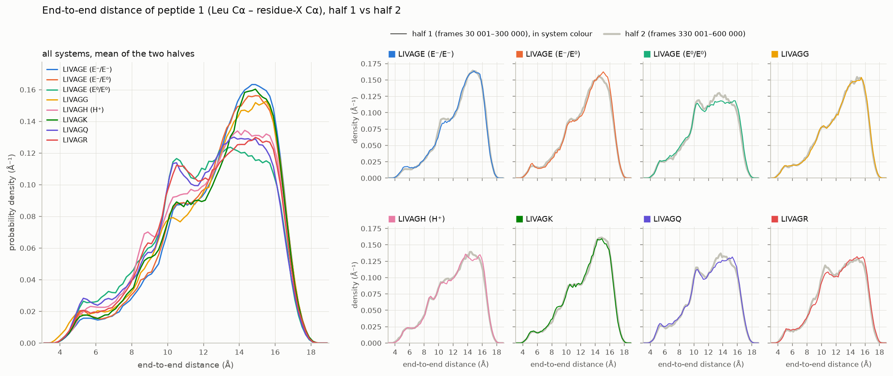
End-to-end distance of peptide 1 (Leu Cα – residue-X Cα), half 1 vs half 2
Distribution of the :2@CA–:7@CA distance (Cα of L1 to Cα of X6) of peptide 1 over all 270 000 frames of each half (not only contact frames), 0.2 Å bins, normalised densities. Left: all systems overlaid, mean of the two half densities (equal-size halves, so identical to pooling them); right: one panel per system, half 1 in the system colour drawn over half 2 in gray, so a visible gray rim = the halves agree. Shared axes everywhere. For LIVAGE (E⁻/E⁰) peptide 1 is the charged (GLU) one.

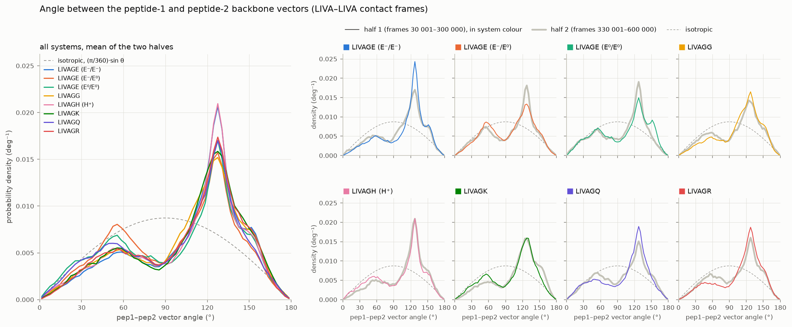
Angle between the peptide-1 and peptide-2 backbone vectors (LIVA–LIVA contact frames)
Distribution of the angle between the residue-centre-of-mass vectors v1 = :2→:5 (L1→A4 of peptide 1) and v2 of peptide 2, over LIVA–LIVA contact frames only (LIVA centre-of-mass distance < 7 Å), 3° bins, normalised densities; 0° = parallel, 180° = antiparallel, and the dashed gray curve is the isotropic (random-orientation) expectation, sin θ/2 per radian = (π/360)·sin θ per degree. Left: all systems, equal-weight mean of the two half densities (the halves have different numbers of contact frames); right: half 1 in system colour over half 2 in gray, shared axes. Caveat: in the source cpptraj input the second vector is :9→:12 (ACE→Val of peptide 2) while the first is :2→:5 (Leu→Ala of peptide 1), probably an off-by-one for :10→:13, so the angle is between two slightly different segments.

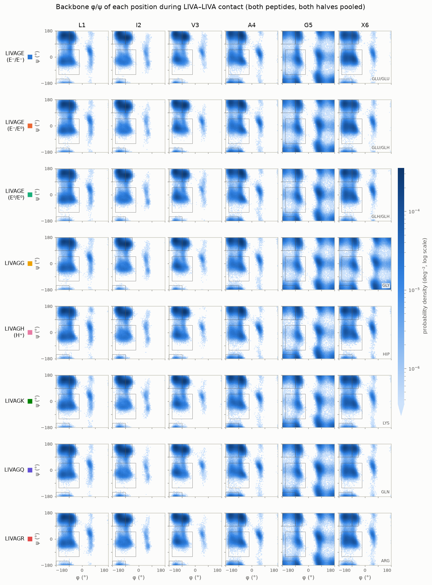
Ramachandran maps per system and position (contact frames)
Rows = systems, columns = peptide positions L1…X6 (residue name of X6 at the bottom right; LIVAGE (E⁻/E⁰) pools GLU of peptide 1 and GLH of peptide 2). Each panel is a 5°×5° histogram of the cpptraj multidihedral φ/ψ (ACE and NHE caps make φ and ψ defined for every position), pooling both peptides and both halves, restricted to LIVA–LIVA contact frames (LIVA centre-of-mass distance < 7 Å), no downsampling; colour = probability density on one shared log scale, empty bins blank. Thin boxes mark the β, PPII and αR regions used in the secondary-structure figure.

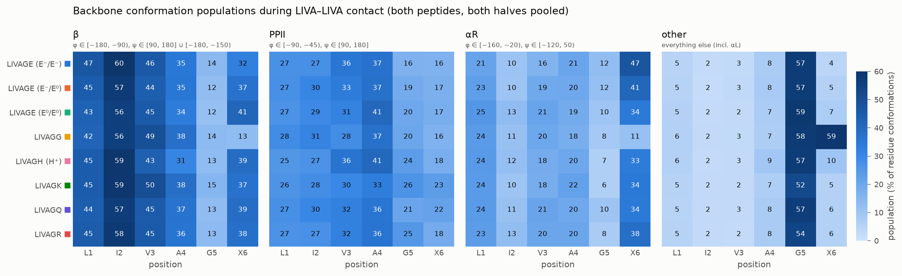
Secondary-structure region populations per position
Percentage of φ/ψ samples of each position (both peptides and both halves pooled, LIVA–LIVA contact frames, LIVA centre-of-mass distance < 7 Å) that fall in each region; the four values of a given system and position (same cell in the four panels) sum to 100 %. Regions (degrees, simple rectangular definitions after common Ramachandran partitions): β: φ ∈ [−180, −90), ψ ∈ [90, 180] ∪ [−180, −150); PPII: φ ∈ [−90, −45), ψ ∈ [90, 180]; αR: φ ∈ [−160, −20), ψ ∈ [−120, 50); other = everything else (αL, bridge, etc.). Half 1 and half 2 differ by at most 5.9 percentage points in any cell (per-half values in secondary_structure_populations.csv). One colour scale for all panels.
Convergence QC
Convergence checks: first half vs second half, full trajectory vs mean of halves.

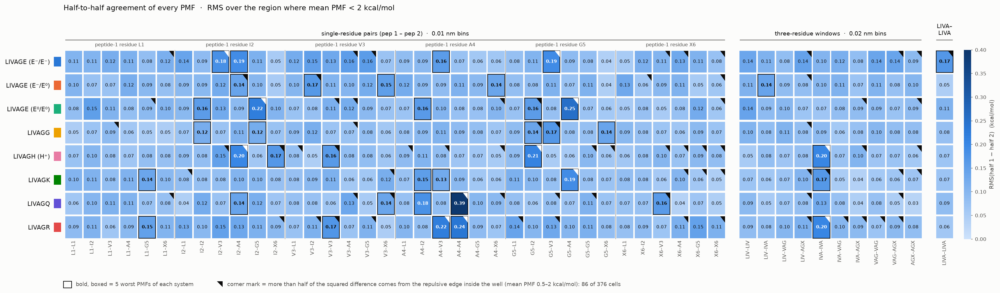
Convergence: RMS difference between trajectory halves
Each cell is the root-mean-square difference between the first-half and second-half PMF (5%-trimmed halves, put on a common grid with the source combine_pmfs algorithm), computed only where the mean-of-halves PMF is below 2 kcal/mol to cut off the hard-core wall; darker blue = the two halves disagree more, and the five worst PMFs of each system are boxed in bold. The cutoff does not remove the sparsely sampled foot of the wall: in the 86 corner-marked cells most of the RMS comes from the repulsive side inside the well (mean PMF 0.5–2 kcal/mol, usually a few bins at r < 0.45 nm), including the largest value (LIVAGQ A4–A4: 0.39 kcal/mol, 0.05 without the edge), so unmarked cells are the better guide to disagreement in the well itself. Columns: 36 residue pairs (position on peptide 1 – position on peptide 2, X = residue 6), 10 three-residue window pairs and the LIVA–LIVA fragment; data from the *_halves_value CSVs.

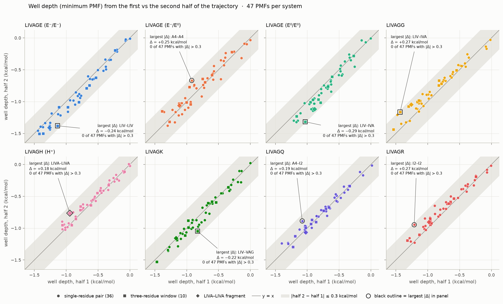
Convergence: well depth, first half vs second half
Each point is one of the 47 PMFs of a system (marker shape = PMF family); x = minimum of the first-half PMF, y = minimum of the second-half PMF (kcal/mol, zero at 1.8 nm, so more negative = deeper attractive well). Points on the y = x line agree between halves (necessary, not sufficient, for convergence); the gray band is the ±0.3 kcal/mol flag threshold, and the PMF with the largest half-to-half disagreement is outlined and named in each panel. Depths are single-bin minima of the raw half PMFs (0.01 nm pair / 0.02 nm window and fragment bins, from the *_halves_value CSVs), so part of the scatter is bin noise rather than drift.

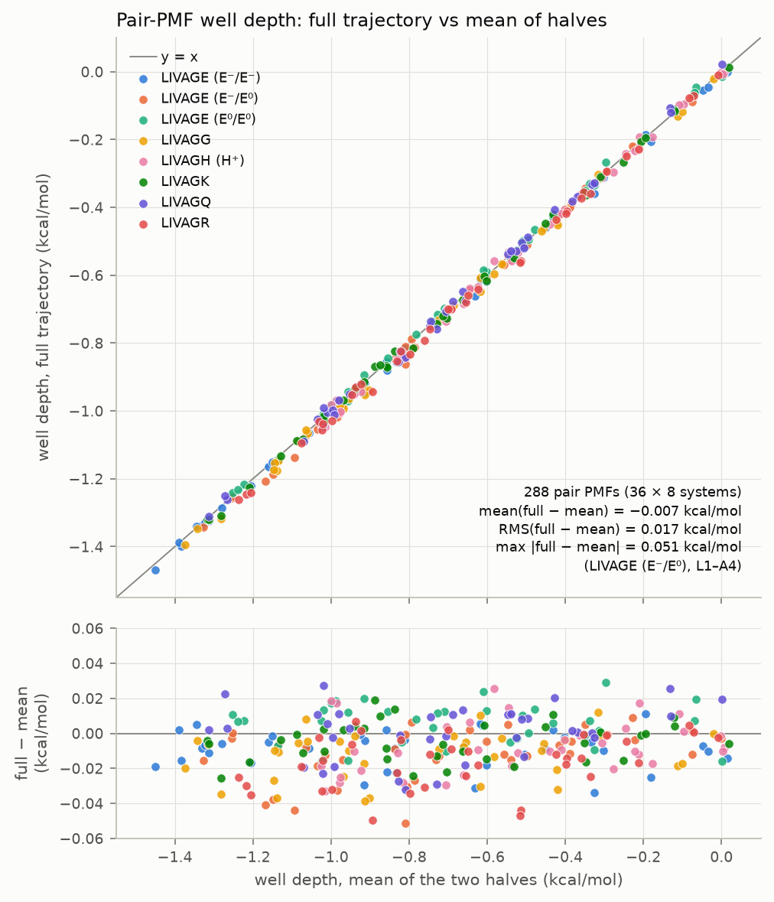
Pair well depth: full trajectory vs mean of halves
For the 36 single-residue pair PMFs of every system, the minimum of the whole-trajectory PMF (single_residue_pmf_full_value, 5%-trimmed) is plotted against the minimum of the mean-of-halves PMF (single_residue_pmf_mean_value); colours are the fixed system colours. The lower panel shows the residual full − mean: it is small (RMS 0.017, max 0.051 kcal/mol) but slightly negative on average (−0.007 kcal/mol, 68% of points below 0). That direction is expected: before re-zeroing, −kT·ln of a pooled histogram is never above the average of the two half PMFs (Jensen), and the minimum of an averaged curve is never deeper than the average of the two minima. The full PMF also includes the 5% of frames trimmed from the start of the second half.
Data tables
Every CSV written next to the figures (numbers behind the plots).
| File | Rows × cols | Size | Columns |
|---|---|---|---|
| figures/cross_system/well_depths_all.csv | 664 × 11 | 48.7 KB | system, family, kind, pmf_id, min_pmf_kcal, r_min_nm, err_at_min_kcal, pmf_id_specific, system_label, sequence, x_resname |
| figures/halved/halved_summary.csv | 16 × 12 | 1.5 KB | system, half, contact_frames, contact_pct, total_hbond_frac, e2e_mean_A, angle_mean_deg, label, frames_in_half, hbonds_per_all_frames_lower_bound, e2e_median_A, angle_median_deg |
| figures/halved/hbond_occupancy.csv | 256 × 7 | 7.9 KB | system, half, pos_i, res_i, pos_j, res_j, occupancy_per_contact_frame |
| figures/halved/secondary_structure_populations.csv | 144 × 10 | 9.3 KB | system, label, position, residue, half, n_samples, beta, ppii, alpha_r, other |
| figures/overview/pair_well_depths_full.csv | 288 × 9 | 13.8 KB | system, i, j, pair_label, min_pmf_kcal, r_min_nm, resname_pep1, resname_pep2, tail_min |
| figures/overview/pair_well_depths_mean.csv | 288 × 9 | 13.8 KB | system, i, j, pair_label, min_pmf_kcal, r_min_nm, resname_pep1, resname_pep2, tail_min |
| figures/qc/convergence_table.csv | 376 × 11 | 28.8 KB | system, pmf_id, family, rms_halves_kcal, depth_half1, depth_half2, depth_mean, depth_full, flag, rms_excl_edge_kcal, edge_share |